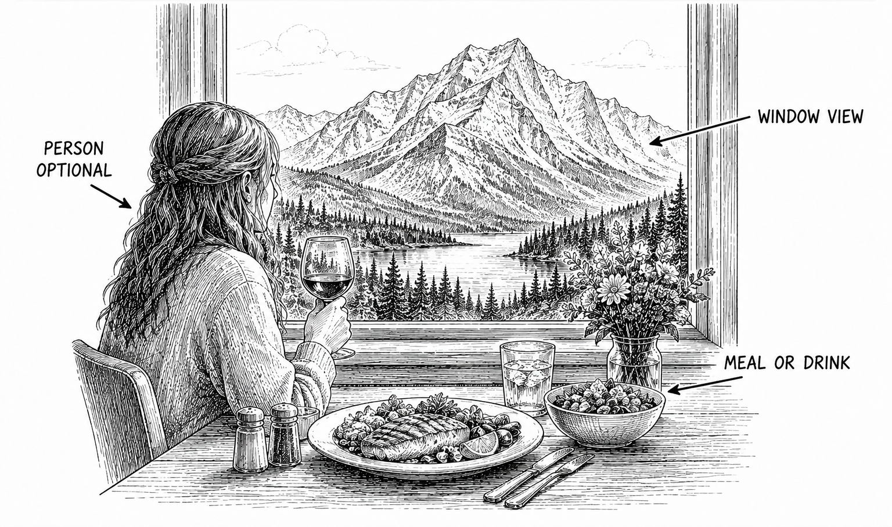

Primary real example
Travel Alberta
Northern Lights Alpine Kitchen dining with panoramic mountain views.
Open the original exampleShot 48 | Day 5 | September 21 | Northern Lights Alpine Kitchen, Banff Gondola Summit
Reference links for this shot.

These examples stay on their original sites. No photographer images are copied into this guide.
Primary real example
Northern Lights Alpine Kitchen dining with panoramic mountain views.
Open the original example